Cold

{{ tarea.fields.nombre | capital}}
Warm
{{ tarea.fields.nombre | capital }}
Hot

{{ tarea.fields.nombre | capital }}
En progreso

{{ tarea.fields.nombre | capital }}
En revisión

{{ tarea.fields.nombre | capital }}
Finalizada
{{ tarea.fields.nombre }}